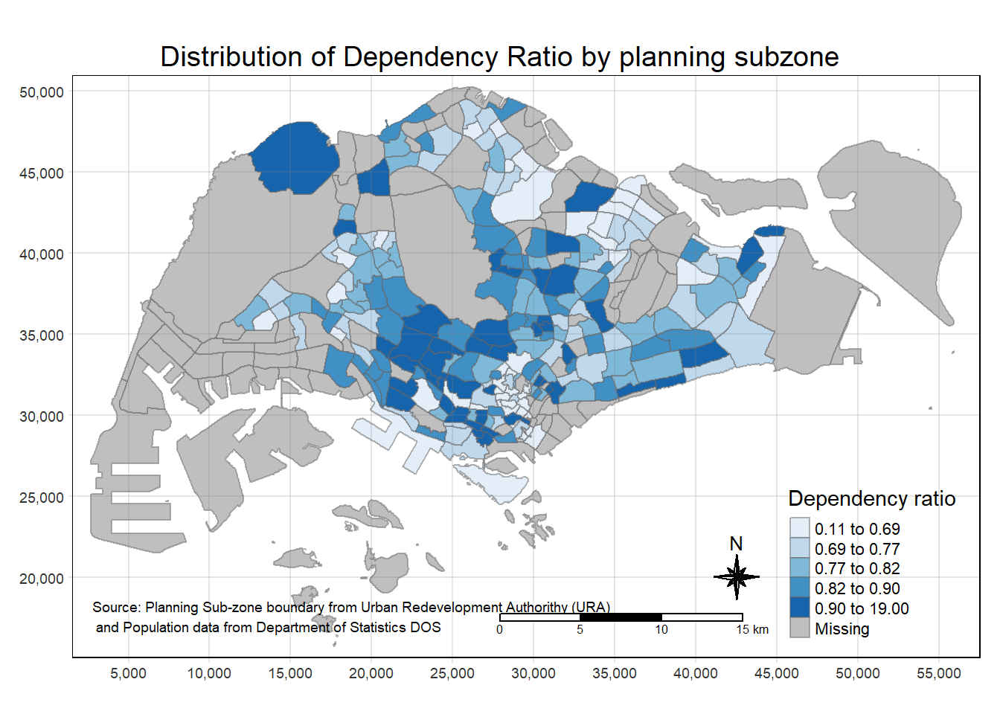

pacman::p_load(sf, tmap, tidyverse)Hands-on Exercise 2: Thematic Mapping and GeoVisualisation with R
1.0 Introduction
1.1 Getting Started
In this hands-on exercise, we will be using the following packages:
tmap for creating thematic maps such as choropleth and proportional symbol maps,
readr for importing delimited text file,
tidyr for tidying data,
dplyr for wrangling data and
sf for handling geospatial data
2.0 Data Acquisition
There will be 2 data sources used in this exercise:
Master Plan 2014 Subzone Boundary (Web) from data.gov.sg
Singapore Residents by Planning Area / Subzone, Age Group, Sex and Type of Dwelling, June 2011-2020 (respopagesextod2011to2020.csv) from Department of Statistics, Singapore
2.1 Extracting Geospatial and Aspatial Data Sets
Following a structure similar to Hands-on Exercise 01, start by creating a new folder labeled Hands-on_Ex02. Within this folder, create a sub-folder named data. Inside the data sub-folder, create two additional sub-folders and rename them geospatial and aspatial respectively.
Unzip the MasterPlan2014SubzoneBoundaryWebSHP.zip folder and place all files into geospatial sub-folder.
Unzip the respopagesextod2011to2020.zip folder and place respopagesextod2011to2020.csv into aspatial sub-folder.
Note: Our aspatial data file does not contain any coordinates values, but it’s
PAandSZfields can be used as unique identifiers to geocode toMP14_SUBZONE_WEB_PLshapefile!
3.0 Geospatial Data Handling
3.1 Importing Geospatial Data
In the previous exercise, we have learnt to import geospatial data into RStudio by using st_read() of sf package. Let’s try it now!
3.1.1 Importing polygon feature data in shapefile format
mpsz <- st_read(dsn = "data/geospatial",
layer = "MP14_SUBZONE_WEB_PL")Reading layer `MP14_SUBZONE_WEB_PL' from data source
`C:\kt526\IS415-GAA\Hands-on_Ex\Hands-on_Ex02\data\geospatial'
using driver `ESRI Shapefile'
Simple feature collection with 323 features and 15 fields
Geometry type: MULTIPOLYGON
Dimension: XY
Bounding box: xmin: 2667.538 ymin: 15748.72 xmax: 56396.44 ymax: 50256.33
Projected CRS: SVY213.2 Checking the Content of A Simple Feature Data Frame
3.2.1 Working with st_geometry()
st_geometry(mpsz)Geometry set for 323 features
Geometry type: MULTIPOLYGON
Dimension: XY
Bounding box: xmin: 2667.538 ymin: 15748.72 xmax: 56396.44 ymax: 50256.33
Projected CRS: SVY21
First 5 geometries:3.2.2 Working with glimpse()
glimpse(mpsz)Rows: 323
Columns: 16
$ OBJECTID <int> 1, 2, 3, 4, 5, 6, 7, 8, 9, 10, 11, 12, 13, 14, 15, 16, 17, …
$ SUBZONE_NO <int> 1, 1, 3, 8, 3, 7, 9, 2, 13, 7, 12, 6, 1, 5, 1, 1, 3, 2, 2, …
$ SUBZONE_N <chr> "MARINA SOUTH", "PEARL'S HILL", "BOAT QUAY", "HENDERSON HIL…
$ SUBZONE_C <chr> "MSSZ01", "OTSZ01", "SRSZ03", "BMSZ08", "BMSZ03", "BMSZ07",…
$ CA_IND <chr> "Y", "Y", "Y", "N", "N", "N", "N", "Y", "N", "N", "N", "N",…
$ PLN_AREA_N <chr> "MARINA SOUTH", "OUTRAM", "SINGAPORE RIVER", "BUKIT MERAH",…
$ PLN_AREA_C <chr> "MS", "OT", "SR", "BM", "BM", "BM", "BM", "SR", "QT", "QT",…
$ REGION_N <chr> "CENTRAL REGION", "CENTRAL REGION", "CENTRAL REGION", "CENT…
$ REGION_C <chr> "CR", "CR", "CR", "CR", "CR", "CR", "CR", "CR", "CR", "CR",…
$ INC_CRC <chr> "5ED7EB253F99252E", "8C7149B9EB32EEFC", "C35FEFF02B13E0E5",…
$ FMEL_UPD_D <date> 2014-12-05, 2014-12-05, 2014-12-05, 2014-12-05, 2014-12-05…
$ X_ADDR <dbl> 31595.84, 28679.06, 29654.96, 26782.83, 26201.96, 25358.82,…
$ Y_ADDR <dbl> 29220.19, 29782.05, 29974.66, 29933.77, 30005.70, 29991.38,…
$ SHAPE_Leng <dbl> 5267.381, 3506.107, 1740.926, 3313.625, 2825.594, 4428.913,…
$ SHAPE_Area <dbl> 1630379.27, 559816.25, 160807.50, 595428.89, 387429.44, 103…
$ geometry <MULTIPOLYGON [m]> MULTIPOLYGON (((31495.56 30..., MULTIPOLYGON (…3.2.3 Working with head()
head(mpsz)Simple feature collection with 6 features and 15 fields
Geometry type: MULTIPOLYGON
Dimension: XY
Bounding box: xmin: 24468.89 ymin: 28369.47 xmax: 32362.39 ymax: 30542.74
Projected CRS: SVY21
OBJECTID SUBZONE_NO SUBZONE_N SUBZONE_C CA_IND PLN_AREA_N
1 1 1 MARINA SOUTH MSSZ01 Y MARINA SOUTH
2 2 1 PEARL'S HILL OTSZ01 Y OUTRAM
3 3 3 BOAT QUAY SRSZ03 Y SINGAPORE RIVER
4 4 8 HENDERSON HILL BMSZ08 N BUKIT MERAH
5 5 3 REDHILL BMSZ03 N BUKIT MERAH
6 6 7 ALEXANDRA HILL BMSZ07 N BUKIT MERAH
PLN_AREA_C REGION_N REGION_C INC_CRC FMEL_UPD_D X_ADDR
1 MS CENTRAL REGION CR 5ED7EB253F99252E 2014-12-05 31595.84
2 OT CENTRAL REGION CR 8C7149B9EB32EEFC 2014-12-05 28679.06
3 SR CENTRAL REGION CR C35FEFF02B13E0E5 2014-12-05 29654.96
4 BM CENTRAL REGION CR 3775D82C5DDBEFBD 2014-12-05 26782.83
5 BM CENTRAL REGION CR 85D9ABEF0A40678F 2014-12-05 26201.96
6 BM CENTRAL REGION CR 9D286521EF5E3B59 2014-12-05 25358.82
Y_ADDR SHAPE_Leng SHAPE_Area geometry
1 29220.19 5267.381 1630379.3 MULTIPOLYGON (((31495.56 30...
2 29782.05 3506.107 559816.2 MULTIPOLYGON (((29092.28 30...
3 29974.66 1740.926 160807.5 MULTIPOLYGON (((29932.33 29...
4 29933.77 3313.625 595428.9 MULTIPOLYGON (((27131.28 30...
5 30005.70 2825.594 387429.4 MULTIPOLYGON (((26451.03 30...
6 29991.38 4428.913 1030378.8 MULTIPOLYGON (((25899.7 297...4.0 Aspatial Data Handling
4.1 Importing and Converting Attribute Data
Next, we will import respopagsex2011to2020.csv file into RStudio using read_csv() of readr package. Save the file into a R dataframe called popdata.
popdata <- read_csv("data/aspatial/respopagesextod2011to2020.csv", show_col_types = FALSE)4.2 Checking the Content of A Simple Feature Data Frame
4.2.1 Working with glimpse()
glimpse(popdata)Rows: 984,656
Columns: 7
$ PA <chr> "Ang Mo Kio", "Ang Mo Kio", "Ang Mo Kio", "Ang Mo Kio", "Ang Mo K…
$ SZ <chr> "Ang Mo Kio Town Centre", "Ang Mo Kio Town Centre", "Ang Mo Kio T…
$ AG <chr> "0_to_4", "0_to_4", "0_to_4", "0_to_4", "0_to_4", "0_to_4", "0_to…
$ Sex <chr> "Males", "Males", "Males", "Males", "Males", "Males", "Males", "M…
$ TOD <chr> "HDB 1- and 2-Room Flats", "HDB 3-Room Flats", "HDB 4-Room Flats"…
$ Pop <dbl> 0, 10, 30, 50, 0, 0, 40, 0, 0, 10, 30, 60, 0, 0, 40, 0, 0, 10, 30…
$ Time <dbl> 2011, 2011, 2011, 2011, 2011, 2011, 2011, 2011, 2011, 2011, 2011,…4.2.2 Working with head()
head(popdata)# A tibble: 6 × 7
PA SZ AG Sex TOD Pop Time
<chr> <chr> <chr> <chr> <chr> <dbl> <dbl>
1 Ang Mo Kio Ang Mo Kio Town Centre 0_to_4 Males HDB 1- and 2-Room … 0 2011
2 Ang Mo Kio Ang Mo Kio Town Centre 0_to_4 Males HDB 3-Room Flats 10 2011
3 Ang Mo Kio Ang Mo Kio Town Centre 0_to_4 Males HDB 4-Room Flats 30 2011
4 Ang Mo Kio Ang Mo Kio Town Centre 0_to_4 Males HDB 5-Room and Exe… 50 2011
5 Ang Mo Kio Ang Mo Kio Town Centre 0_to_4 Males HUDC Flats (exclud… 0 2011
6 Ang Mo Kio Ang Mo Kio Town Centre 0_to_4 Males Landed Properties 0 20114.3 Data Preparation
4.3.1 Data wrangling
To create a thematic map, it is necessary for us to prepare a data table containing values for the year 2020. This table should encompass variables such as:
YOUNG: age group 0 to 4 until age 20 to 24,ECONOMY ACTIVE: age group 25 to 29 until age group 60 to 64,AGED: age group 65 and aboveTOTAL: all age groupsDEPENDENCY: the ratio ofYOUNG+AGEDgroups against theECONOMY ACTIVEgroup
popdata2020 <- popdata %>%
filter(Time == 2020) %>%
group_by(PA, SZ, AG) %>%
summarise(`POP` = sum(`Pop`)) %>%
ungroup()%>%
pivot_wider(names_from=AG,
values_from=POP) %>%
mutate(YOUNG = rowSums(.[3:6])
+rowSums(.[12])) %>%
mutate(`ECONOMY ACTIVE` = rowSums(.[7:11])+
rowSums(.[13:15]))%>%
mutate(`AGED`=rowSums(.[16:21])) %>%
mutate(`TOTAL`=rowSums(.[3:21])) %>%
mutate(`DEPENDENCY` = (`YOUNG` + `AGED`)
/`ECONOMY ACTIVE`) %>%
select(`PA`, `SZ`, `YOUNG`,
`ECONOMY ACTIVE`, `AGED`,
`TOTAL`, `DEPENDENCY`)4.3.2 Combine attribute data with geospatial data
Before proceeding with the georelational join, an additional step is necessary to standardize the case of values in the PA and SZ fields. This is essential because the PA and SZ fields contain a mix of upper and lowercase characters. Conversely, the SUBZONE_N and PLN_AREA_N fields are consistently in uppercase.
popdata2020 <- popdata2020 %>%
mutate_at(.vars = vars(PA, SZ),
.funs = list(toupper)) %>%
filter(`ECONOMY ACTIVE` > 0)Following this, we will use left_join() from the dplyr package to merge the geographical data and attribute table using the planning subzone name, denoted as SUBZONE_N and SZ respectively, as the common identifier.
mpsz_pop2020 <- left_join(mpsz, popdata2020,
by = c("SUBZONE_N" = "SZ"))write_rds(mpsz_pop2020, "data/rds/mpszpop2020.rds")5.0 Geospatial Visualization – Choropleth Maps
Choropleth mapping involves the symbolisation of enumeration units, such as countries, provinces, states, counties or census units, using area patterns or graduated colors. For example, a social scientist may need to use a choropleth map to portray the spatial distribution of aged population of Singapore by Master Plan 2014 Subzone Boundary.
There are two approaches that can be used when we are preparing these thematic maps:
Plotting a thematic map quickly by using qtm().
Plotting highly customisable thematic map by using tmap elements.
5.1 Quick Plotting Choropleth Maps using qtm()
A straightforward and quick method for creating a choropleth map with tmap pacakge involves utilizing the qtm(). It is succinct and offers a well-constructed default visualization that is suitable for many scenarios.
To generate a static map, tmap_mode() can be employed with the plot option, while for an interactive mode, the view option should be selected. The fill argument is utilized to map the attribute, namely, DEPENDENCY.
tmap_mode("plot")
qtm(mpsz_pop2020,
fill = "DEPENDENCY")
5.2 Customizing Choropleth Maps with tmap elements
While qtm() is handy for quickly creating choropleth maps, it has a drawback—it makes it challenging to precisely control the appearance of individual map layers. To achieve a high-quality choropleth map with detailed aesthetics, it’s advisable to leverage tmap’s elements, as demonstrated below.
tm_shape(mpsz_pop2020)+
tm_fill("DEPENDENCY",
style = "quantile",
palette = "Blues",
title = "Dependency ratio") +
tm_layout(main.title = "Distribution of Dependency Ratio by planning subzone",
main.title.position = "center",
main.title.size = 1.2,
legend.height = 0.45,
legend.width = 0.35,
frame = TRUE) +
tm_borders(alpha = 0.5) +
tm_compass(type="8star", size = 2) +
tm_scale_bar() +
tm_grid(alpha =0.2) +
tm_credits("Source: Planning Sub-zone boundary from Urban Redevelopment Authorithy (URA)\n and Population data from Department of Statistics DOS",
position = c("left", "bottom"))
5.2.1 Drawing a base map
The fundamental component of tmap is tm_shape(), serving as the cornerstone for constructing maps. To initiate our map creation, we begin with the base map – the fundamental framework onto which we’ll incorporate statistical details. To achieve this, we input the data mpsz_pop2020 into tm_shape() and then enhance it with one or more layer elements, such as tm_fill() and tm_polygons(). Specifically, we use tm_polygons() to outline the planning subzone polygons.
tm_shape(mpsz_pop2020) +
tm_polygons()
5.2.2 Drawing a Choropleth Map using tm_polygons()
To create a choropleth map illustrating the geographical distribution of a chosen variable by planning subzone, simply assign the target variable (e.g., DEPENDENCY) to tm_polygons(). This straightforward approach allows us to achieve a visual representation similar to qtm().
tm_shape(mpsz_pop2020)+
tm_polygons("DEPENDENCY")
5.2.3 Drawing a Choropleth Maps using tm_fill() and tm_border()
In fact, tm_polygons() is a wrapper of tm_fill() and tm_border(). With tm_fill(), polygons are shaded using the default color scheme, while tm_borders() adds the shapefile borders to the choropleth map.
If we just use tm_fill() on its own…
tm_shape(mpsz_pop2020)+
tm_fill("DEPENDENCY")
The shading on the planning subzones reflects their dependency values, but there are no boundaries. Let’s address that:
tm_shape(mpsz_pop2020)+
tm_fill("DEPENDENCY") +
tm_borders(lwd = 0.1, alpha = 1)
There’s a noticeable difference from using just tm_polygons() – observe the thinner grey borders? This happens because we adjusted the settings for tm_borders. We tweaked parameters like alpha (transparency from 0 to 1), col (border color), lwd (line width), and lty (line type). The default alpha value is typically 1, col is the border color, lwd defaults to 1, and lty defaults to “solid”.
5.3 Data Classification methods
Choropleth maps often use classification methods to group a bunch of data into different categories or classes. In tmap, there are ten methods you can use for this, like fixed, sd, equal, pretty (the default), quantile, kmeans, hclust, bclust, fisher, and jenks.
To define a classification method, we can simply use the style argument in tm_fill() or tm_polygons().
5.3.1 Built in classification methods
Now, let’s try using the jenks and equal classification methods with 5 classes!
tm_shape(mpsz_pop2020)+
tm_fill("DEPENDENCY",
n = 5,
style = "jenks") +
tm_borders(alpha = 0.5)
tm_shape(mpsz_pop2020)+
tm_fill("DEPENDENCY",
n = 5,
style = "equal") +
tm_borders(alpha = 0.5)
5.3.2 Custom breaks
For all the preset styles, the breaks between categories are calculated automatically. However, if you want to customize these breaks, you can explicitly set them using the breaks option in tm_fill().
Note: for tmap, breaks include a minimum and maximum - so if you want n categories, you’ll need to specify n+1 elements in the breaks argument!
Before we get started, it is always a good practice to get some descriptive statistics on the variable before setting the break points.
summary(mpsz_pop2020$DEPENDENCY) Min. 1st Qu. Median Mean 3rd Qu. Max. NA's
0.1111 0.7147 0.7866 0.8585 0.8763 19.0000 92 With reference to the results above, we will set break point at 0.60, 0.70, 0.80, and 0.90. In addition, we also need to include a minimum and maximum, which we set at 0 and 100. Our breaks vector is thus c(0, 0.60, 0.70, 0.80, 0.90, 1.00).
tm_shape(mpsz_pop2020)+
tm_fill("DEPENDENCY",
breaks = c(0, 0.60, 0.70, 0.80, 0.90, 1.00)) +
tm_borders(alpha = 0.5)
5.4 Customizing colour scheme with RColorBrewer
tmap enables the use of color ramps, which can be either user-defined or selected from a set of predefined ramps in the RColorBrewer package.
To modify the color, assign your chosen color to the palette parameter in tm_fill().
tm_shape(mpsz_pop2020)+
tm_fill("DEPENDENCY",
n = 6,
style = "quantile",
palette = "Blues") +
tm_borders(alpha = 0.5)
Did you notice that the choropleth map is now shaded in blue?
We can also reverse the colour shading by adding a “-“ prefix.
tm_shape(mpsz_pop2020)+
tm_fill("DEPENDENCY",
style = "quantile",
palette = "-Greens") +
tm_borders(alpha = 0.5)
5.5 May layouts
Map layout involves bringing together various map elements into a cohesive design. These elements include the objects being mapped, the title, scale bar, compass, margins, and aspect ratios, among others. The color settings and data classification methods we discussed earlier, related to the palette and breakpoints, contribute to shaping the overall look of the map.
5.5.1 Map legend
In tmap, various legend options are available to modify the positioning, format, and appearance of the legend.
tm_shape(mpsz_pop2020)+
tm_fill("DEPENDENCY",
style = "jenks",
palette = "Blues",
legend.hist = TRUE,
legend.is.portrait = TRUE,
legend.hist.z = 0.1) +
tm_layout(main.title = "Distribution of Dependency Ratio by planning subzone \n(Jenks classification)",
main.title.position = "center",
main.title.size = 1,
legend.height = 0.45,
legend.width = 0.35,
legend.outside = FALSE,
legend.position = c("right", "bottom"),
frame = FALSE) +
tm_borders(alpha = 0.5)
5.5.2 Map style
To change a wide variety of layout settings, we can use the tmap_style():
tm_shape(mpsz_pop2020)+
tm_fill("DEPENDENCY",
style = "quantile",
palette = "-Greens") +
tm_borders(alpha = 0.5) +
tmap_style("classic")
5.5.3 Cartographic furniture
Beside map style, tmap also also provides arguments to draw other map furniture such as compass, scale bar and grid lines.
tm_shape(mpsz_pop2020)+
tm_fill("DEPENDENCY",
style = "quantile",
palette = "Blues",
title = "No. of persons") +
tm_layout(main.title = "Distribution of Dependency Ratio \nby planning subzone",
main.title.position = "center",
main.title.size = 1.2,
legend.height = 0.45,
legend.width = 0.35,
frame = TRUE) +
tm_borders(alpha = 0.5) +
tm_compass(type="8star", size = 2) +
tm_scale_bar(width = 0.15) +
tm_grid(lwd = 0.1, alpha = 0.2) +
tm_credits("Source: Planning Sub-zone boundary from Urban Redevelopment Authorithy (URA)\n and Population data from Department of Statistics DOS",
position = c("left", "bottom"))
And lastly, reset to the default style with:
tmap_style("white")5.6 Facet maps
At times, comparing maps is often more effective when they are displayed side by side, an arrangement commonly referred to as small multiple maps or facet maps. These arrangements involve organizing numerous maps side-by-side or occasionally stacked vertically. Small multiple maps are particularly useful for illustrating how spatial relationships evolve concerning another variable, such as time.
In tmap, small multiple maps can be plotted in three ways:
by assigning multiple values to at least one of the asthetic arguments,
by defining a group-by variable in tm_facets(), and
by creating multiple stand-alone maps with tmap_arrange()
5.6.1 By assigning multiple values to at least one of the aesthetic arguments
In this example, small multiple choropleth maps are created by defining ncols in tm_fill()
tm_shape(mpsz_pop2020)+
tm_fill(c("YOUNG", "AGED"),
style = "equal",
palette = "Blues") +
tm_layout(legend.position = c("right", "bottom")) +
tm_borders(alpha = 0.5) +
tmap_style("white")
Assigning multiple values to at least one of the aesthetic arguments:
tm_shape(mpsz_pop2020)+
tm_polygons(c("DEPENDENCY","AGED"),
style = c("equal", "quantile"),
palette = list("Blues","Greens")) +
tm_layout(legend.position = c("right", "bottom"))
5.6.2 By defining a group-by variable in tm_facets()
tm_shape(mpsz_pop2020) +
tm_fill("DEPENDENCY",
style = "quantile",
palette = "Blues",
thres.poly = 0) +
tm_facets(by="REGION_N",
free.coords=TRUE,
drop.shapes=TRUE) +
tm_layout(legend.show = FALSE,
title.position = c("center", "center"),
title.size = 20) +
tm_borders(alpha = 0.5)
5.6.3 By creating multiple stand-alone maps with tmap_arrange()
youngmap <- tm_shape(mpsz_pop2020)+
tm_polygons("YOUNG",
style = "quantile",
palette = "Blues")
agedmap <- tm_shape(mpsz_pop2020)+
tm_polygons("AGED",
style = "quantile",
palette = "Blues")
tmap_arrange(youngmap, agedmap, asp=1, ncol=2)
5.7 Mapping Spatial Object Meeting a Selection Criterion
Instead of creating small multiple choropleth map, an alternative approach is to utilize the selection function to map spatial objects that meet specific selection criterion.
tm_shape(mpsz_pop2020[mpsz_pop2020$REGION_N=="CENTRAL REGION", ])+
tm_fill("DEPENDENCY",
style = "quantile",
palette = "Blues",
legend.hist = TRUE,
legend.is.portrait = TRUE,
legend.hist.z = 0.1) +
tm_layout(legend.outside = TRUE,
legend.height = 0.45,
legend.width = 5.0,
legend.position = c("right", "bottom"),
frame = FALSE) +
tm_borders(alpha = 0.5)